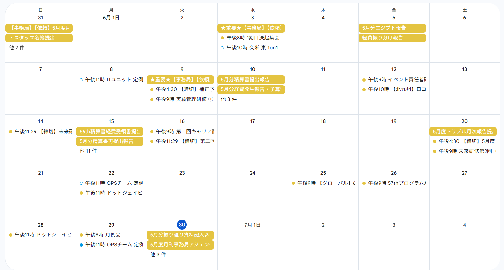
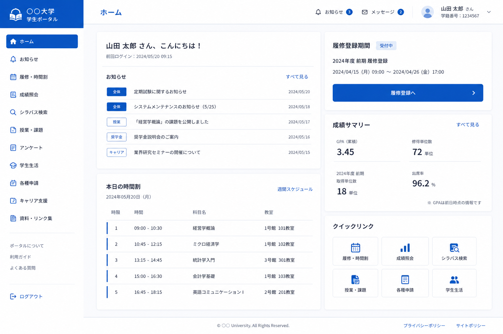
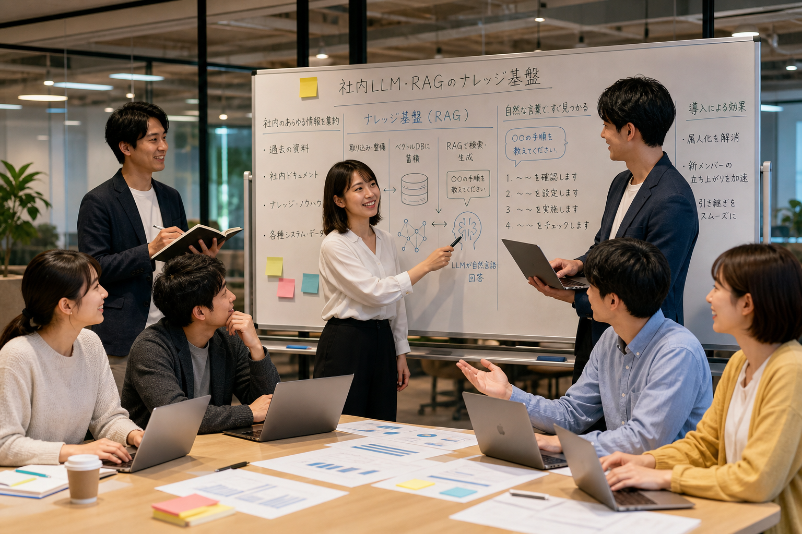

OPSは、運営を支える仕組みを一つずつ着実に開発・運用していきます。短期の改善から将来の構想まで、AIとITの力で「人がやるべき仕事に時間を使える組織」へとアップデートします。
組織全体を前へ進ませるために、大きく５つの方針を進めます。
Calendar
全社のイベント・会議・締切を、ひとつのカレンダーに集約。部署や立場を越えて同じ予定を共有でき、伝達漏れを防ぎます。今後はリマインドや出欠管理へと運用を広げます。

Portal
バラバラのツールや資料を、ひとつの入り口にまとめます。あわせて学生管理システムを開発し、参加状況や連絡先も一元管理。「どこを見ればいいか分からない」を解消します。

AI · RAG
社内LLM・RAGで、過去の資料やノウハウを自然な言葉ですぐ検索できる基盤をつくります。属人化をなくし、新メンバーの立ち上がりや引き継ぎをスムーズにします。
Automation
自動リマインドや定型作業の自動化で、ミスと手間を削減します。あわせてスタッフ向けのAI研修を実施し、組織全体のリテラシーを底上げします。

Future Stack
Salesforceに代わる、OPS独自の管理基盤を構想しています。これまでの資産も活かしながら、数年先を見据えた皆さんが便利だと思うツール開発や仕組みを目指します。
運営に必要な機能が、ひとつにまとまった体験へ。OPSが描く未来像です。